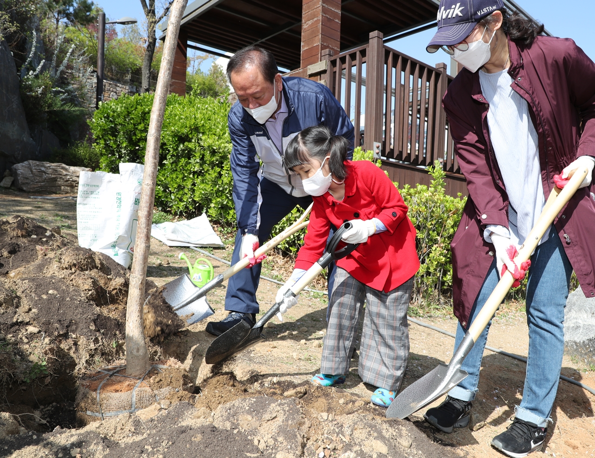

마포구, 제17회 환경상 후보자 10월 2일까지 추천 접수
환경보전·재활용·녹색생활 3개 분야 6명 선정, 12월 수여식

[시사포커스 / 김재록 기자] 마포구(구청장 유동균)가 지역 환경 발전에 기여한 구민과 단체를 발굴하기 위해 오는 10월 2일까지 ‘제17회 서울특별시 마포구 환경상’ 수상 후보자를 추천받는다고 8일 밝혔다. 추천 분야는 ▲환경보전 ▲자원재활용 ▲녹색생활실천·푸른마을 가꾸기 등 3개 분야이며, 올해는 개인과 단체를 포함해 총 6명을 선정할 예정이다. 마포구는 ‘다시 500만 그루 나무심기’를 비롯해 그늘목 조성, 마을정원사 양성 등 생활권 녹지를 넓히고 주민 참여형 환경 실천을 이어가고 있으며, 이번 환경상은 그 노력에 동참한 구민과 단체의 활동을 격려하는 자리다.
마포구에 따르면, ‘환경보전’ 분야는 자연환경 보전과 쾌적한 환경 조성에 기여한 활동을, ‘자원재활용’ 분야는 자원 절약과 재사용 문화 확산, 생활환경 오염 방지에 힘쓴 활동을 대상으로 한다. ‘녹색생활실천·푸른마을 가꾸기’ 분야는 친환경 소비 실천과 담장·벽면·골목길 녹화, 꽃밭 조성 등 마을 환경 개선에 기여한 활동을 심사한다. 추천 대상은 공고일 기준 3년 이상 마포구에 거주한 개인 또는 같은 기간 지역 내에 소재한 단체·사업체로 환경 분야에서 두드러진 공적이 있는 경우다. 후보자는 관계기관장과 단체장, 서울시서부교육지원청장과 학교장, 마포구청 부서장 및 동장 등이 추천할 수 있다.
유동균 마포구청장은 “지역의 환경을 위해 묵묵히 실천해 온 구민과 단체가 환경상을 통해 널리 알려지고 격려받기를 바란다”며 “우리 주변의 숨은 환경 공로자들이 적극 추천될 수 있도록 많은 관심을 부탁드린다”고 말했다. 구는 후보자 공적 확인과 마포구 환경위원회 및 공적심사위원회 심사를 거쳐 수상자를 최종 선정하고, 오는 12월 환경상 수여식을 열 예정이다. 추천서 등 제출 서식은 마포구 누리집 ‘고시공고’에서 내려받을 수 있으며, 관련 서류를 마포구청 환경과에 방문·등기우편 제출하거나 전자우편으로 접수하면 된다.